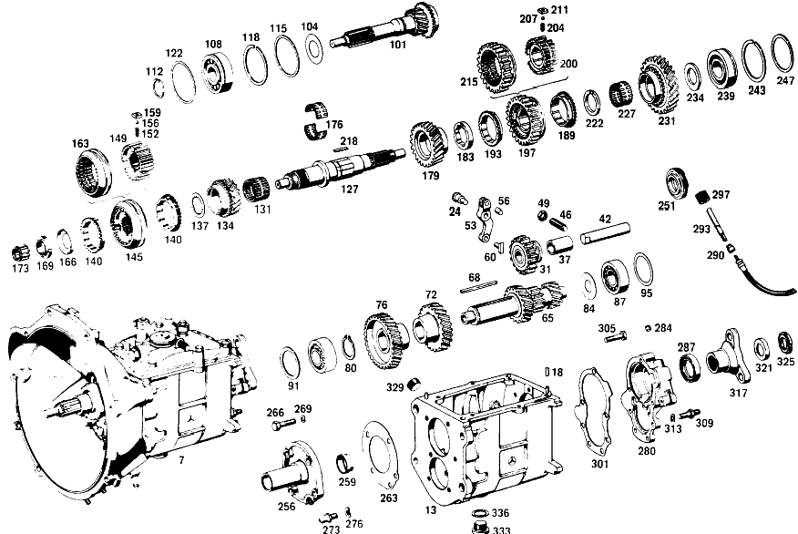

| № | Артикул | Название | Кол. | Примечание |
|---|---|---|---|---|
| 7 | A 111 260 09 04 | КОРОБКА ПЕРЕДАЧ | 1 | с BELL HOUSING |
| 13 | A 111 260 04 11 | Корпус коробки передач | 1 | |
| 18 | N 000007 006205 | - Цилиндрический штифт | 2 | |
| 24 | A 111 262 00 74 | - Палец | 1 | INTERMEDIATE LEVER |
| 31 | A 120 260 03 25 | Шестерня заднего хода | 1 | |
| 37 | A 120 263 03 50 | - втулка | 1 | |
| 42 | A 186 263 00 30 | Ось шестерни заднего хода | 1 | |
| 46 | N 000417 010006 | РЕЗЬБОВОЙ ШТИФТ | - | |
| 46 | A 110 990 01 10 | БОЛТ | 1 | |
| 49 | N 000934 010014 | Гайка | - | |
| 49 | N 304032 010003 | Шестигранная гайка | 1 | M10 |
| 53 | A 136 260 00 37 | РЫЧАГ | 1 | ПЕРЕДАЧА ЗАДНЕГО ХОДА |
| 56 | N 900037 008104 | - Установочный штифт | 1 | |
| 60 | A 121 263 01 23 | Скользящая муфта | 1 | ШЕСТЕРНЯ ОБРАТНОГО ХОДА |
| 65 | A 110 263 07 02 | Промвал коробки передач | 1 | |
| 68 | A 186 991 03 68 | Призматическая шпонка | 1 | |
| 72 | A 111 263 00 13 | Шестерня | 1 | 38 TEETH; 3RD SPEED |
| 76 | A 180 263 04 10 | ШЕСТЕРНЯ | 1 | 45 TEETH; 4TH SPEED |
| 80 | N 900055 035300 | Стопорное кольцо | 1 | |
| 84 | A 186 990 18 40 | Диск | 1 | |
| 87 | A 001 981 71 25 | ШАРИКОПОДШИПНИК | - | |
| 87 | A 004 981 42 01 | Подшипник с цил. роликами | 2 | |
| 91 | A 602 263 04 52 | Дистанционная шайба | 1 | |
| 95 | A 120 263 08 52 | Компенсационная шайба | NB | ПО НЕОБХОДИМОСТИ 1.00 MM |
| 101 | A 112 260 05 20 | ПРИВОДНОЙ ВАЛ | 1 | |
| 104 | A 186 262 00 66 | Маслозащитное кольцо | 1 | |
| 108 | N 000625 606306 | Шарикоподшипник | 1 | |
| 112 | A 123 262 04 94 | Пруж. стопорное кольцо | 1 | |
| 115 | A 186 262 04 51 | Проставочное кольцо | 1 | |
| 118 | A 136 994 06 35 | Пруж. стопорное кольцо | 1 | ПО НЕОБХОДИМОСТИ 1.90 MM |
| 122 | A 136 262 06 52 | Компенсационная шайба | NB | ПО НЕОБХОДИМОСТИ 0.10 MM |
| 127 | A 180 262 01 05 | Вторичный вал | 1 | |
| 131 | A 001 981 68 10 | ПОДШИПНИК ИГОЛЬЧАТЫЙ | 1 | |
| 134 | A 111 260 03 44 | Цил. косозубая шестерня | 1 | 31 TEETH, 3RD SPEED |
| 137 | A 120 262 23 62 | Упорная шайба | 1 | |
| 140 | A 113 262 00 34 | Кольцо синхронизатора | 2 | ТРЕТЬЯ И ЧЕТВЁРТАЯ ПЕРЕДАЧА |
| 145 | A 111 260 08 45 | Корпус синхронизатора | 1 | ТРЕТЬЯ И ЧЕТВЁРТАЯ ПЕРЕДАЧА |
| 149 | A 111 262 04 35 | - Корпус синхронизатора | - | ТРЕТЬЯ И ЧЕТВЁРТАЯ ПЕРЕДАЧА |
| 152 | A 180 993 41 01 | - пружина | 3 | |
| 156 | N 005401 306500 | - Шар | 3 | 6.5mm |
| 159 | A 121 262 00 40 | - Поводок | 3 | |
| 163 | A 111 262 04 23 | - СКОЛЬЗ. МУФТА СИНХРОНИЗ. | - | ТРЕТЬЯ И ЧЕТВЁРТАЯ ПЕРЕДАЧА |
| 166 | A 120 994 01 15 | Стопорная шайба | 1 | |
| 169 | A 120 262 03 26 | Шлицевая гайка | 1 | |
| 173 | A 000 981 63 12 | СЕПАРАТОР ИГОЛЬЧ. ПОДШ. | - | |
| 173 | A 002 981 34 12 | Сепаратор роликоподш. | 1 | |
| 176 | A 120 981 03 12 | Сепаратор роликоподш. | 1 | РАЗДЕЛЬН. |
| 179 | A 110 262 02 12 | ШЕСТЕРНЯ | 1 | |
| 183 | A 120 262 16 62 | ШАЙБА УПОРНАЯ | 1 | ПО НЕОБХОДИМОСТИ 7.9 MM |
| 189 | A 113 262 00 34 | Кольцо синхронизатора | 1 | ПЕРВАЯ ПЕРЕДАЧА |
| 193 | A 113 262 00 34 | Кольцо синхронизатора | 1 | ВТОРАЯ ПЕРЕДАЧА |
| 197 | A 111 260 07 45 | СИНХРОНИЗАТОР | 1 | ПЕРВАЯ И ВТОРАЯ ПЕРЕДАЧА |
| 200 | A 111 262 03 35 | - СИНХРОНИЗАТОР | - | ПЕРВАЯ И ВТОРАЯ ПЕРЕДАЧА |
| 204 | A 180 993 41 01 | - пружина | 3 | |
| 207 | N 005401 306500 | - Шар | 3 | 6.5mm |
| 211 | A 121 262 00 40 | - Поводок | 3 | |
| 215 | A 111 262 03 23 | - СКОЛЬЗ. МУФТА СИНХРОНИЗ. | - | ПЕРВАЯ И ВТОРАЯ ПЕРЕДАЧА |
| 218 | A 120 262 00 81 | Вставной клин | 1 | |
| 222 | A 120 262 11 62 | Упорная шайба | 1 | ПО НЕОБХОДИМОСТИ 4.40 MM |
| 227 | A 001 981 69 10 | Игольчатый подшипник | 1 | |
| 231 | A 110 262 01 11 | ШЕСТЕРНЯ | 1 | ПЕРВАЯ ПЕРЕДАЧА |
| 234 | A 186 262 01 62 | Упорная шайба | 1 | ПО НЕОБХОДИМОСТИ 3.80 MM |
| 239 | A 002 981 06 25 | ШАРИКОПОДШИПНИК | 1 | |
| 243 | A 000 994 16 40 | СТОПОРН. КОЛЬЦО | 1 | |
| 247 | A 136 262 04 52 | Компенсационная шайба | NB | ПО НЕОБХОДИМОСТИ 0.1 MM |
| 251 | A 110 264 00 30 | Ведущее колесо | 1 | СПИДОМЕТР |
| 256 | A 111 260 08 21 | КРЫШКА КОРПУСА | 1 | СПЕРЕДИ |
| 259 | A 186 261 00 60 | - Уплотнительное кольцо | 1 | |
| 263 | A 111 261 03 79 | Уплотнительная прокладка | 1 | КРЫШКА КОРПУСА НА КП |
| 266 | N 000931 008046 | Винт | - | |
| 266 | N 304017 008018 | Винт с 6-гранной головкой | 4 | КРЫШКА КОРПУСА НА КП; M8X35 |
| 269 | N 000137 008200 | Пружинная шайба | 4 | КРЫШКА КОРПУСА НА КП |
| 273 | A 111 991 00 15 | Шаровой палец | 1 | ВИЛКА ВЫЖИМНАЯ |
| 276 | N 000137 010200 | Пружинная шайба | 1 | |
| 280 | A 111 260 04 16 | Крышка корпуса | 1 | СЗАДИ |
| 284 | A 153 264 00 55 | - Пробка | 1 | |
| 287 | A 000 997 17 46 | УПЛОТНИТ. КОЛЬЦО | 1 | ВТОРИЧНЫЙ ВАЛ |
| 290 | A 115 274 00 60 | УПЛОТНИТ. КОЛЬЦО | 1 | |
| 293 | A 111 264 00 32 | Вал | 1 | СПИДОМЕТР |
| 297 | A 115 260 06 48 | ПРИВОДНАЯ ШЕСТЕРНЯ | 1 | СПИДОМЕТР |
| 301 | A 111 261 00 79 | Уплотнительная прокладка | 1 | |
| 305 | N 000931 008046 | Винт | - | |
| 305 | N 304017 008018 | Винт с 6-гранной головкой | 3 | КРЫШКА СЗАДИ НА КП; M8X35 |
| 309 | A 110 990 00 10 | БОЛТ | 4 | КРЫШКА СЗАДИ НА КП |
| 313 | N 000137 008204 | Пружинная шайба | - | |
| 313 | N 000137 008212 | Пружинная шайба | 7 | КРЫШКА СЗАДИ НА КП |
| 317 | A 111 262 00 45 | Фланец | 1 | |
| 321 | A 186 262 01 73 | предохранитель | 1 | |
| 325 | A 186 262 02 26 | Шлицевая гайка | 1 | |
| 329 | A 186 997 00 32 | ЗАГЛУШКА РЕЗЬБОВАЯ | 1 | ЗАПРАВКА МАСЛА; M24X1,5 |
| 333 | A 094 997 24 00 | Резьбовая пробка | - | |
| 333 | A 210 997 01 32 | Резьбовая пробка | 1 | СЛИВ МАСЛА |
| 336 | N 007603 024100 | УПЛОТНИТ. КОЛЬЦО | 1 | СЛИВ МАСЛА |
| 341 | A 111 260 31 14 | КРЫШКА КОРПУСА | 1 | LESS SHIFT LEVER |
| 346 | A 111 260 34 14 | КРЫШКА КОРПУСА | 1 | |
| 350 | A 111 260 23 14 | - КРЫШКА КОРПУСА | - | |
| 355 | A 198 260 09 14 | - КРЫШКА КОРПУСА | 1 | СВЕРХУ |
| 359 | A 153 992 00 05 | - втулка | 1 | |
| 363 | A 136 265 02 47 | - Палец | 2 | |
| 366 | N 006503 014100 | УПЛОТНИТ. КОЛЬЦО | 1 | ВАЛ ПЕРЕКЛЮЧЕНИЯ |
| 369 | A 136 265 00 48 | - Запор | 1 | |
| 372 | A 136 265 00 93 | - пружина | 1 | |
| 375 | A 121 997 01 30 | - ЗАГЛУШКА РЕЗЬБОВАЯ | 1 | |
| 378 | A 094 990 92 07 | - Уплотнительное кольцо | 1 | |
| 381 | A 183 265 00 46 | - Фиксирующая пластина | 1 | |
| 386 | A 319 268 05 32 | - ВАЛ | 1 | |
| 390 | A 111 260 00 38 | - ВАЛ | 1 | |
| 393 | A 186 268 00 33 | - КУЛАЧОК ПЕРЕКЛЮЧЕНИЯ | 1 | |
| 396 | A 198 268 00 33 | КУЛАЧОК ПЕРЕКЛЮЧЕНИЯ | 1 | |
| 400 | A 183 268 00 52 | - Компенсационная шайба | 1 | |
| 403 | A 000 981 01 10 | - Игольчатый подшипник | 2 | |
| 406 | A 186 997 01 20 | - ПРОБКА | 1 | |
| 409 | N 006503 012100 | - Уплотнительное кольцо | 1 | |
| 413 | N 000472 022000 | - Стопорное кольцо | 1 | |
| 416 | A 198 268 05 23 | ГОЛОВКА ВИЛКИ | 1 | |
| 419 | A 120 990 13 20 | - болт | 1 | |
| 421 | N 000127 007200 | Пружинное кольцо | 1 | |
| 424 | A 111 267 00 83 | УПЛОТНИТЕЛЬ | 2 | |
| 428 | A 111 267 00 74 | БОЛТ | 1 | |
| 431 | A 001 990 01 51 | - ГАЙКА | 1 | |
| 434 | A 111 260 01 79 | - Палец выбора передач | 1 | |
| 437 | A 186 997 11 40 | - Уплотнительное кольцо | 1 | |
| 439 | A 110 260 01 37 | - РЫЧАГ | 1 | |
| 444 | A 000 992 01 10 | - втулка | 1 | 35.2 MM |
| 449 | A 186 260 03 28 | - ПЛАСТИНА НАПРАВЛЯЮЩАЯ | 1 | |
| 452 | A 198 260 00 28 | ПЛАСТИНА НАПРАВЛЯЮЩАЯ | 1 | |
| 455 | A 136 265 00 74 | БОЛТ | 1 | |
| 458 | A 136 265 02 93 | ПРУЖИНА НАЖИМНАЯ | 1 | |
| 462 | N 000660 004002 | ЗАКЛЕПКА | 1 | |
| 465 | A 136 990 82 40 | - Диск | 2 | |
| 468 | A 136 265 02 72 | - гайка | 2 | |
| 472 | N 900055 008000 | Пружинная шайба | 2 | |
| 476 | A 186 265 00 01 | - ВИЛКА ПЕРЕКЛЮЧЕНИЯ | 1 | ПЕРВАЯ И ВТОРАЯ ПЕРЕДАЧА |
| 479 | A 309 265 01 02 | - Вилка перекл.передач | 1 | ТРЕТЬЯ И ЧЕТВЁРТАЯ ПЕРЕДАЧА |
| 481 | A 180 265 01 07 | - Ручка рычага перекл.пер. | 1 | ПЕРЕДАЧА ЗАДНЕГО ХОДА |
| 484 | A 186 993 13 01 | - пружина | 3 | |
| 487 | N 005401 308000 | - Шар | 3 | |
| 490 | A 136 265 00 53 | - Проставочная трубка | 2 | |
| 492 | A 136 265 01 53 | - Проставочная трубка | 1 | |
| 495 | A 111 990 34 40 | - Диск | 3 | ПО НЕОБХОДИМОСТИ 0.3 MM |
| 499 | A 309 265 03 05 | - ТЯГА ПЕРЕКЛ. ПЕРЕДАЧ | 1 | ПЕРВАЯ И ВТОРАЯ ПЕРЕДАЧА |
| 502 | A 309 265 04 05 | - ТЯГА ПЕРЕКЛ. ПЕРЕДАЧ | 1 | ТРЕТЬЯ И ЧЕТВЁРТАЯ ПЕРЕДАЧА |
| 505 | A 136 265 02 04 | - ТЯГА ПЕРЕКЛ. ПЕРЕДАЧ | 1 | ПЕРЕДАЧА ЗАДНЕГО ХОДА |
| 508 | A 184 265 00 53 | - Проставочная трубка | 2 | |
| 511 | A 136 265 00 81 | - Клин | 1 | |
| 514 | A 094 260 11 00 | - Воздушный клапан | 1 | |
| 519 | A 110 260 04 37 | Рычаг | 1 | ВАЛ ПЕРЕКЛЮЧЕНИЯ |
| 523 | A 000 992 01 10 | - втулка | 1 | 35.2 MM |
| 527 | A 111 261 01 79 | ПРОКЛАДКА УПЛОТНИТЕЛЬНАЯ | 1 | |
| 530 | N 000931 008171 | БОЛТ | 4 | КРЫШКА СВЕРХУ К КОРПУСУ КОРОБКИ ПЕРЕДАЧ |
| 534 | A 111 268 07 74 | БОЛТ | 2 | КРЫШКА СВЕРХУ К КОРПУСУ КОРОБКИ ПЕРЕДАЧ |
| 537 | N 000137 008204 | Пружинная шайба | - | |
| 537 | N 000137 008212 | Пружинная шайба | 6 | КРЫШКА СВЕРХУ К КОРПУСУ КОРОБКИ ПЕРЕДАЧ |
| 541 | A 000 545 12 06 | Переключатель | 1 | |
| 545 | A 000 545 24 28 | ШТЕКЕР | 1 | |
| 548 | A 094 990 92 07 | Уплотнительное кольцо | 1 | |
| 552 | A 111 546 01 43 | ДЕРЖАТЕЛЬ | 1 | |
| 555 | A 094 988 15 00 | Скоба | 1 | |
| 560 | A 111 260 13 82 | ТЯГА ПЕРЕКЛЮЧЕНИЯ | 1 | |
| 564 | A 111 268 05 39 | НАПРАВЛЯЮЩ. ЦАПФА | 1 | |
| 569 | A 111 997 12 40 | Уплотнительное кольцо | 2 | |
| 573 | A 186 990 69 40 | Диск | NB | |
| 578 | A 186 268 02 73 | предохранитель | 1 | |
| 582 | A 186 268 02 74 | Палец | 1 | |
| 586 | A 182 993 08 01 | пружина | 1 | |
| 591 | A 111 268 03 97 | Манжета | 1 | ТЯГА ПЕРЕКЛЮЧЕНИЯ |
| 595 | A 180 268 05 24 | Рычаг перекл.передач | 1 | |
| 599 | A 111 268 03 92 | РЕЗИНОВАЯ ПОДУШКА | 1 | |
| 603 | A 180 268 00 57 | Колпачок | 1 | |
| 607 | A 180 268 05 40 | ДЕРЖАТЕЛЬ | - | |
| 607 | A 108 268 02 42 | Кнопка ручки рычага КП | 1 | DARK GRAPHITE GREY |
| 614 | A 111 260 28 94 | ОПОРА ПОДШИПНИКА | 1 | |
| 620 | A 000 981 21 10 | - Игольчатый подшипник | 2 | |
| 624 | A 180 268 02 50 | - ВТУЛКА | 1 | ВЫКЛЮЧАТЕЛЬ ФОНАРЕЙ ЗАДНЕГО ХОДА |
| 629 | A 111 260 04 15 | РЫЧАГ | 1 | |
| 633 | A 111 268 10 50 | втулка | 1 | 10.0 MM |
| 637 | A 111 268 02 51 | Проставочное кольцо | 1 | |
| 642 | A 180 268 00 74 | БОЛТ | 1 | |
| 645 | A 000 545 08 06 | Переключатель | 1 | |
| 649 | A 111 268 07 05 | Крышка | 1 | |
| 655 | A 111 260 13 81 | РЫЧАГ | 1 | |
| 658 | A 000 981 21 10 | - Игольчатый подшипник | 2 | |
| 662 | A 180 997 08 40 | - УПЛОТНИТ. КОЛЬЦО | 2 | |
| 666 | A 312 990 03 40 | Диск | 1 | |
| 669 | N 900055 012001 | Пружинная шайба | 1 | |
| 673 | N 006799 010001 | Стопорная шайба | 1 | |
| 677 | N 000127 008203 | Пружинное кольцо | 1 | |
| 681 | N 000934 008010 | Гайка | - | |
| 681 | N 304032 008006 | Шестигранная гайка | 1 | M8 |
| 685 | A 180 268 02 15 | РЫЧАГ | 1 | |
| 689 | N 000933 006130 | Винт | 1 | |
| 693 | A 094 990 68 10 | Пружинное кольцо | 1 | |
| 697 | A 180 268 00 32 | ВАЛ | 1 | |
| 701 | A 180 997 08 40 | УПЛОТНИТ. КОЛЬЦО | 1 | |
| 705 | N 900055 012001 | Пружинная шайба | 1 | |
| 709 | A 180 260 02 37 | Рычаг | 1 | |
| 715 | A 111 260 00 66 | Шаровой подпятник | 1 | |
| 719 | N 000439 006200 | - Гайка | 1 | |
| 724 | N 071805 010200 | - Шаровой подпятник | 2 | |
| 728 | N 071805 010401 | ПОДПЯТНИК ШАРОВОЙ | 2 | |
| 732 | A 111 260 48 33 | ТЯГА ПЕРЕКЛ. ПЕРЕДАЧ | 1 | |
| 737 | N 070616 010000 | Гайка | 1 | |
| 741 | A 000 991 38 22 | Шаровой подпятник | 1 | |
| 746 | A 111 260 50 33 | ТЯГА ПЕРЕКЛ. ПЕРЕДАЧ | 1 | |
| 752 | N 070616 010000 | Гайка | 1 | |
| 757 | A 000 991 38 22 | Шаровой подпятник | 1 | |
| 763 | A 110 990 18 40 | ШАЙБА | 2 | 22 MM |
| 770 | A 111 260 31 82 | ТЯГА ПЕРЕКЛЮЧЕНИЯ | 1 | |
| 779 | A 111 267 00 86 | КОЛЬЦО РЕЗИНОВОЕ | 2 | |
| 783 | A 198 990 00 48 | ШАЙБА | 1 | |
| 787 | A 000 994 70 41 | ПРЕДОХРАНИТЕЛЬ | 1 | |
| 792 | A 111 260 03 95 | Опора рычага перекл.пер. | 1 | |
| 798 | A 111 992 02 10 | ВТУЛКА | 2 | |
| 803 | A 111 268 08 34 | КРЫШКА ПОДШИПНИКА | 1 | |
| 808 | A 111 268 03 98 | ПРОБКА | 1 | |
| 814 | A 111 268 04 97 | МАНЖЕТА | 1 | СВЕРХУ |
| 819 | A 111 268 06 97 | МАНЖЕТА | 1 | ВНИЗУ |
| 824 | N 000933 006130 | Винт | 4 | |
| 829 | N 000137 006204 | Пружинная шайба | 4 | |
| 834 | N 000125 007408 | Шайба | - | |
| 834 | N 006902 007100 | Шайба | 4 | |
| 842 | A 127 268 00 24 | РЫЧАГ ПЕРЕКЛЮЧЕНИЯ | 1 | |
| 848 | A 111 990 10 01 | БОЛТ | 1 | |
| 854 | A 198 268 01 50 | ВТУЛКА | 4 | |
| 861 | A 111 990 35 40 | ШАЙБА | 2 | |
| 866 | A 001 990 01 51 | ГАЙКА | 1 | |
| 872 | A 111 268 09 42 | Кнопка ручки рычага КП | 1 | |
| 879 | A 111 260 03 89 | ПРИВОДНАЯ ШТАНГА | 2 | |
| 885 | A 111 260 02 53 | КОНЦ. ЭЛЕМЕНТ | 2 | |
| 891 | A 111 992 02 10 | ВТУЛКА | 2 | |
| 899 | N 070616 008003 | ГАЙКА | 2 | |
| 906 | N 006902 007100 | Шайба | 4 | |
| 915 | N 000985 006000 | ГАЙКА | 4 | |
| A 111 260 12 04 | КОРОБКА ПЕРЕДАЧ | 1 | с BELL HOUSING | |
| A 111 260 13 04 | КОРОБКА ПЕРЕДАЧ | 1 | с BELL HOUSING | |
| A 136 262 00 74 | - БОЛТ | 1 | INTERMEDIATE LEVER | |
| A 180 260 06 24 | ПРОМЕЖУТОЧНЫЙ ВАЛ | - | ||
| A 111 260 03 24 | ПРОМЕЖУТОЧНЫЙ ВАЛ | 1 | ||
| A 180 263 03 13 | ШЕСТЕРНЯ | 1 | 38 TEETH; 3RD SPEED | |
| A 602 263 02 52 | Дистанционная шайба | NB | ПО НЕОБХОДИМОСТИ 0.10 MM | |
| A 602 263 03 52 | Дистанционная шайба | NB | ПО НЕОБХОДИМОСТИ 0.25 MM | |
| A 602 263 04 52 | Дистанционная шайба | NB | ПО НЕОБХОДИМОСТИ 0.50 MM | |
| A 111 260 00 20 | ПРИВОДНОЙ ВАЛ | - | ||
| A 136 994 09 35 | Пруж. стопорное кольцо | 1 | ПО НЕОБХОДИМОСТИ 2.00 MM | |
| A 136 994 07 35 | СТОПОРН. КОЛЬЦО | - | ||
| A 136 994 09 35 | Пруж. стопорное кольцо | 1 | ПО НЕОБХОДИМОСТИ 2.05 MM | |
| A 136 262 07 52 | Компенсационная шайба | NB | ПО НЕОБХОДИМОСТИ 0.20 MM | |
| A 136 262 08 52 | Компенсационная шайба | NB | ПО НЕОБХОДИМОСТИ 0.30 MM | |
| A 180 262 06 12 | ШЕСТЕРНЯ | - | ||
| A 110 262 02 12 | ШЕСТЕРНЯ | 1 | ||
| A 120 262 17 62 | ШАЙБА УПОРНАЯ | - | ||
| A 120 262 18 62 | ШАЙБА УПОРНАЯ | 1 | ПО НЕОБХОДИМОСТИ 7.95 MM | |
| A 120 262 18 62 | ШАЙБА УПОРНАЯ | 1 | ПО НЕОБХОДИМОСТИ 8.0 MM | |
| A 120 262 19 62 | ШАЙБА УПОРНАЯ | - | ||
| A 120 262 20 62 | Упорная шайба | 1 | ПО НЕОБХОДИМОСТИ 8.0 MM | |
| A 120 262 20 62 | Упорная шайба | 1 | ПО НЕОБХОДИМОСТИ 8.10 MM | |
| A 111 262 03 35 | СИНХРОНИЗАТОР | - | ПЕРВАЯ И ВТОРАЯ ПЕРЕДАЧА | |
| A 120 262 12 62 | ШАЙБА УПОРНАЯ | - | ||
| A 120 262 13 62 | Упорная шайба | 1 | ПО НЕОБХОДИМОСТИ 4.45 MM | |
| A 120 262 13 62 | Упорная шайба | 1 | ПО НЕОБХОДИМОСТИ 4.50 MM | |
| A 120 262 14 62 | ШАЙБА УПОРНАЯ | - | ||
| A 120 262 15 62 | Упорная шайба | 1 | ПО НЕОБХОДИМОСТИ 4.50 MM | |
| A 120 262 15 62 | Упорная шайба | 1 | ПО НЕОБХОДИМОСТИ 4.60 MM | |
| A 111 262 01 11 | ШЕСТЕРНЯ | 1 | ПЕРВАЯ ПЕРЕДАЧА | |
| A 186 262 02 62 | Упорная шайба | 1 | ПО НЕОБХОДИМОСТИ 3.90 MM | |
| A 186 262 03 62 | Упорная шайба | 1 | ПО НЕОБХОДИМОСТИ 4.00 MM | |
| A 186 262 04 62 | ШАЙБА УПОРНАЯ | 1 | ПО НЕОБХОДИМОСТИ 4.10 MM | |
| A 186 262 05 62 | Упорная шайба | 1 | ПО НЕОБХОДИМОСТИ 4.20 MM | |
| A 186 262 06 22 | КРЫШКА | 1 | ПО НЕОБХОДИМОСТИ 4.30 MM | |
| A 186 262 07 62 | Упорная шайба | 1 | ПО НЕОБХОДИМОСТИ 4.40 MM | |
| A 186 262 08 62 | Упорная шайба | 1 | ПО НЕОБХОДИМОСТИ 4.50 MM | |
| A 002 981 07 25 | Рад. шарикоподшипник | 1 | ||
| A 136 262 05 52 | Компенсационная шайба | NB | ПО НЕОБХОДИМОСТИ 0.2 MM | |
| A 136 262 09 52 | Компенсационная шайба | NB | ПО НЕОБХОДИМОСТИ 0.3 MM | |
| A 111 260 04 21 | КРЫШКА КОРПУСА | - | ||
| A 111 260 06 21 | КРЫШКА КОРПУСА | 1 | СПЕРЕДИ | |
| A 000 987 40 46 | Возвратный рычаг | 1 | КРЫШКА КОРПУСА НА КП | |
| A 003 997 19 45 | УПЛОТНИТ. КОЛЬЦО | 1 | КРЫШКА КОРПУСА НА КП | |
| A 111 261 02 79 | ПРОКЛАДКА УПЛОТНИТЕЛЬНАЯ | 1 | КРЫШКА КОРПУСА НА КП | |
| A 112 261 00 79 | Уплотнительная прокладка | 1 | КРЫШКА КАРТЕРА КОР.ПЕРЕДАЧ СПЕРЕДИ | |
| A 111 586 01 26 | РЕМКОМПЛЕКТ | 1 | ||
| A 111 260 00 68 | набор уплотнений | 1 | ||
| N 000931 006021 | БОЛТ | 1 | ГИБКИЙ ВАЛ НА КП | |
| N 000137 006204 | Пружинная шайба | 1 | ГИБКИЙ ВАЛ НА КП | |
| N 000931 010239 | Винт | 2 | КАРТЕР СЦЕПЛЕНИЯ НА ПРОМЕЖУТОЧНОМ ФЛАНЦЕ | |
| N 000125 010504 | ШАЙБА | 6 | РЫЧАГ ПЕРЕКЛЮЧЕНИЯ НА ПОЛУ КАБИНЫ ВОДИТЕЛЯ, СВЕРХУ | |
| N 000931 010268 | Винт | - | ||
| N 304017 010050 | Винт с 6-гранной головкой | 4 | РЫЧАГ ПЕРЕКЛЮЧЕНИЯ НА ПОЛУ КАБИНЫ ВОДИТЕЛЯ, СВЕРХУ | |
| N 000137 010201 | Пружинная шайба | 4 | РЫЧАГ ПЕРЕКЛЮЧЕНИЯ НА ПОЛУ КАБИНЫ ВОДИТЕЛЯ, СВЕРХУ | |
| N 000934 010014 | Гайка | - | ||
| N 304032 010003 | Шестигранная гайка | 4 | РЫЧАГ ПЕРЕКЛЮЧЕНИЯ НА ПОЛУ КАБИНЫ ВОДИТЕЛЯ, СВЕРХУ; M10 | |
| A 111 260 06 14 | КРЫШКА КОРПУСА | - | ||
| A 111 260 33 14 | КРЫШКА КОРПУСА | 1 | LESS SHIFT LEVER | |
| A 111 260 04 14 | - КРЫШКА КОРПУСА | - | ||
| A 186 260 12 14 | - КРЫШКА КОРПУСА | - | ||
| A 111 260 31 14 | - КРЫШКА КОРПУСА | 1 | СВЕРХУ | |
| A 153 992 00 05 | - втулка | 1 | ДЛЯ ПЕРЕДАЧИ ЗАДН. ХОДА | |
| A 180 993 26 01 | - пружина | 1 | ||
| A 136 265 02 47 | - Палец | 2 | ||
| N 000933 006130 | - Винт | 2 | DETENT PLATE TO TRANSMISSION CASE TOP COVER | |
| N 000137 006204 | - Пружинная шайба | 2 | DETENT PLATE TO TRANSMISSION CASE TOP COVER | |
| N 000934 006007 | - Гайка | 2 | DETENT PLATE TO TRANSMISSION CASE TOP COVER | |
| A 111 990 32 40 | - ШАЙБА | NB | ГОЛОВКА ВИЛКИ НА ВАЛУ ВКЛЮЧЕНИЯ | |
| A 111 990 33 40 | - ШАЙБА | NB | ГОЛОВКА ВИЛКИ НА ВАЛУ ВКЛЮЧЕНИЯ | |
| N 000094 001503 | - ШПЛИНТ | 1 | ||
| A 110 260 03 37 | - РЫЧАГ | 1 | ||
| A 000 992 03 10 | - ВТУЛКА | 1 | 18.2 MM | |
| N 000931 006096 | - БОЛТ | 1 | SELECTOR LEVER TO SELECTOR FINGER | |
| A 094 990 68 10 | - Пружинное кольцо | 1 | SELECTOR LEVER TO SELECTOR FINGER | |
| N 000934 006007 | - Гайка | 1 | SELECTOR LEVER TO SELECTOR FINGER | |
| A 186 260 01 28 | - ПЛАСТИНА НАПРАВЛЯЮЩАЯ | 1 | ||
| A 186 265 07 01 | - Вилка перекл.передач | 1 | ПЕРВАЯ И ВТОРАЯ ПЕРЕДАЧА | |
| A 111 990 09 40 | - Диск | 3 | ПО НЕОБХОДИМОСТИ 0.5mm | |
| A 111 990 08 40 | - Диск | 3 | ПО НЕОБХОДИМОСТИ 1.0 MM | |
| A 110 260 05 37 | РЫЧАГ | 1 | ВАЛ ПЕРЕКЛЮЧЕНИЯ | |
| A 000 992 03 10 | - ВТУЛКА | 1 | 18.2 MM | |
| N 000931 006096 | БОЛТ | 1 | РЫЧАГ К ВАЛУ ПЕРЕКЛЮЧЕНИЯ | |
| A 094 990 68 10 | Пружинное кольцо | 1 | РЫЧАГ К ВАЛУ ПЕРЕКЛЮЧЕНИЯ | |
| N 000934 006007 | Гайка | 1 | РЫЧАГ К ВАЛУ ПЕРЕКЛЮЧЕНИЯ | |
| A 186 261 01 79 | ПРОКЛАДКА УПЛОТНИТЕЛЬНАЯ | 1 | ||
| N 000931 008246 | Винт | - | ||
| N 304017 008028 | Винт с 6-гранной головкой | 2 | КРЫШКА СВЕРХУ К КОРПУСУ КОРОБКИ ПЕРЕДАЧ | |
| A 111 260 25 82 | ТЯГА ПЕРЕКЛЮЧЕНИЯ | 1 | ||
| A 111 260 21 82 | ТЯГА ПЕРЕКЛЮЧЕНИЯ | 1 | ||
| A 111 268 04 39 | НАПРАВЛЯЮЩ. ЦАПФА | - | ||
| A 183 990 35 40 | Диск | 1 | ||
| N 006799 007000 | Стопорная шайба | 1 | ||
| A 180 268 06 40 | КНОПКА | - | ||
| A 111 268 08 42 | КНОПКА | 1 | ЦВЕТА СЛОНОВОЙ КОСТИ | |
| A 111 260 10 94 | ОПОРА ПОДШИПНИКА | - | ||
| A 111 260 13 94 | ОПОРА ПОДШИПНИКА | - | ||
| A 111 260 29 94 | ОПОРА ПОДШИПНИКА | - | ||
| A 111 260 37 94 | ОПОРА ПОДШИПНИКА | 1 | ||
| A 111 260 37 94 | ОПОРА ПОДШИПНИКА | 1 | ||
| N 000137 006204 | Пружинная шайба | 4 | КРОНШТЕЙН К РАМЕ | |
| N 000934 006007 | Гайка | 4 | КРОНШТЕЙН К РАМЕ | |
| A 111 268 08 05 | КРЫШКА | 1 | ||
| A 111 260 26 81 | РЫЧАГ | 1 | ||
| A 111 268 05 32 | ВАЛ | 1 | ||
| A 111 260 01 37 | РЫЧАГ | 1 | ||
| N 000931 008171 | БОЛТ | 1 | SELECTOR LEVER TO SELECTOR LEVER SHAFT | |
| N 000127 008203 | Пружинное кольцо | 1 | SELECTOR LEVER TO SELECTOR LEVER SHAFT | |
| N 000934 008010 | Гайка | - | ||
| N 304032 008006 | Шестигранная гайка | 1 | SELECTOR LEVER TO SELECTOR LEVER SHAFT; M8 | |
| A 111 260 54 33 | ТЯГА ПЕРЕКЛ. ПЕРЕДАЧ | 1 | ||
| A 111 260 35 33 | ТЯГА ПЕРЕКЛ. ПЕРЕДАЧ | 1 | ||
| A 183 990 42 40 | Диск | 2 | 15 MM | |
| N 000094 002059 | Шплинт | 2 | 2X14 MM | |
| A 111 268 09 34 | КРЫШКА ПОДШИПНИКА | 1 | ||
| N 000931 008172 | БОЛТ | 1 | YOKE TO SHIFTING TUBE | |
| N 000127 008203 | Пружинное кольцо | 1 | YOKE TO SHIFTING TUBE | |
| N 304032 008006 | Шестигранная гайка | 1 | YOKE TO SHIFTING TUBE; M8 | |
| N 000094 001503 | ШПЛИНТ | 1 | ||
| A 111 268 09 42 | Кнопка ручки рычага КП | 1 | ЦВЕТА СЛОНОВОЙ КОСТИ |
Позиций: 354 · подписано на схемах: 233 · колесо — плавный зум в курсор, перетаскивание — пан, двойной клик — зум, клик по артикулу — скопировать.